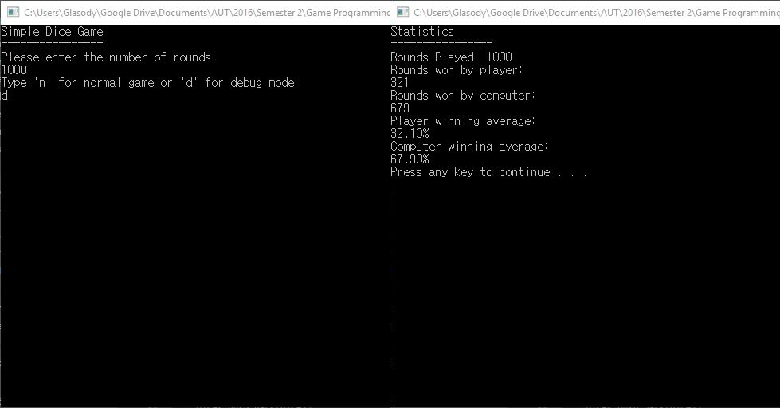
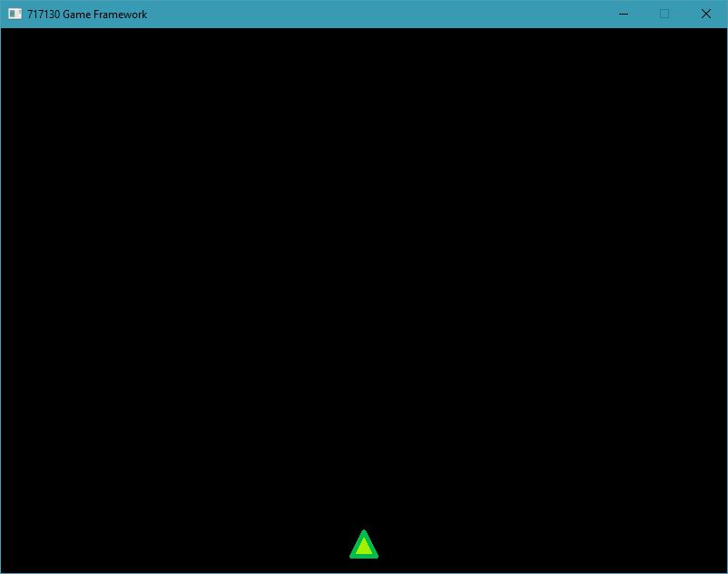
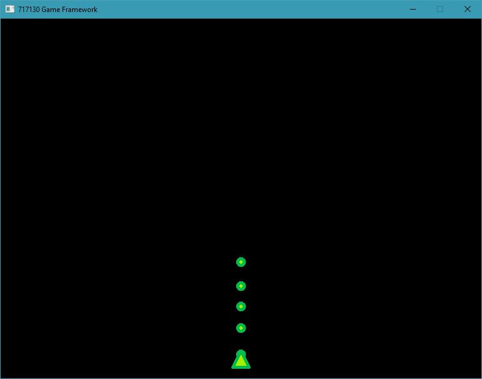
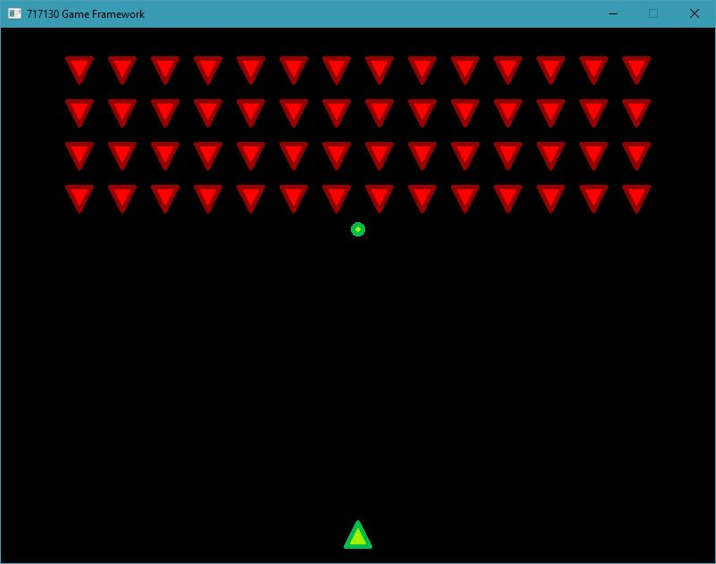
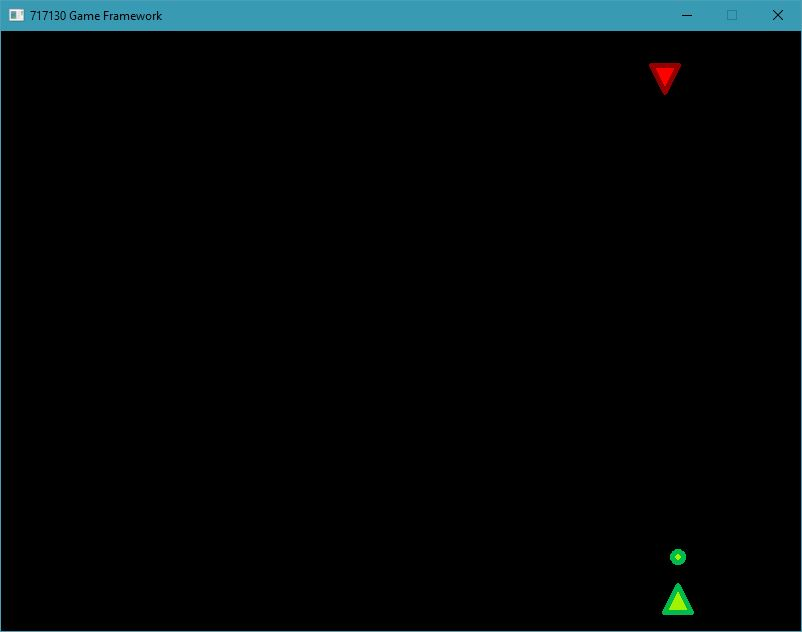

Learning
C++
The first thing to beginnning my steps as a game developer was to learn a programming language to suit the needs, and what better language to learn than C++
Baby steps
These are the first line of code that I had written when learning about C++
int main()
{
std::cout << "Hello World!" << std::endl;
return 0;
}
Ahhh, the good old greetings to start you off
To Infinity...
C++ was a language that I wasnt really used to, it required a lot of learning to even be able to write simple programs
It required Header:
#ifndef __DICE_H__
#define __DICE_H__
#include <memory>
#include <vector>
class Dice
{
public:
Dice();
~Dice();
static std::vector<int> roll(bool playerWin);
void SetQuantity(int qunatity);
static void ClearDice();
static std::vector<int> GetDice();
private:
int quantity;
};
#endif //__DICE_H__
...and Footer:
#include "Dice.h"
#include <iostream>
#include <cmath>
#include <ctime>
#include <stdio.h>
#include <vector>
Dice::Dice()
:quantity(0)
{
srand(time(nullptr));
}
std::vector<int> dices;
std::vector<int>
Dice::roll(bool playerWin)
{
//player rolls
if (dices.empty())
{
int dice1 = (rand() % 6) + 1;
int dice2 = (rand() % 6) + 1;
if (playerWin)
{
while (dice1 < 2 || dice2 < 2)
{
dice1 = (rand() % 6) + 1;
dice2 = (rand() % 6) + 1;
}
}
else
{
while (dice1 == dice2)
{
dice2 = (rand() % 6) + 1;
}
}
dices.push_back(dice1);
dices.push_back(dice2);
}
//ai rolls
else
{
int playerTotal = dices[0] + dices[1];
int dice1 = (rand() % 6) + 1;
int dice2 = (rand() % 6) + 1;
if (playerWin)
{
if (dices[0] != dices[1])
{
while (dice1 == dice2 || (dice1 + dice2) >= playerTotal)
{
dice1 = (rand() % 6) + 1;
dice2 = (rand() % 6) + 1;
}
}
}
else
{
while (dice1 != dice2 && playerTotal >= (dice1 + dice2))
{
dice1 = (rand() % 6) + 1;
dice2 = (rand() % 6) + 1;
}
}
dices.push_back(dice1);
dices.push_back(dice2);
}
return dices;
}
void
Dice::SetQuantity(int qunatity)
{
Dice::quantity = qunatity;
}
void
Dice::ClearDice()
{
dices.clear();
}
std::vector<int>
Dice::GetDice()
{
return dices;
}
...
From a person who learnt to program using a Object Oriented language like Java & C#, it took some time getting my head around the differences between the two files.
Oh, and also this:
Dice::~Dice()
{
}
..."What is this!? It is a destructor? what does it do? Why do we need it?" were some of my first impression on the whole structure of C++, but I was able to slowly pick it up and the result were like so: 
And Beyond...
That was just the tip of the iceberg, I would say that was something decent... but then we were pushed into the deep end.
Our mission was to build a space and fly to into space to fight off the incoming invasion!!!
We were given some basic equipment to help us on our way such as the GP2DFramework that our Commander supplied us with.
We readied our ships for battle
// W02.1: Load the player ship sprite.
// For example: Sprite* pPlayerSprite = m_pBackBuffer->CreateSprite("assets\\playership.png");
Sprite* player_sprite = m_pBackBuffer->CreateSprite("assets\\playership.png");
// W02.1: Create the player ship instance.
player_sprite->SetX(static_cast<int>(width / 2 - player_sprite->GetWidth() / 2));
player_sprite->SetY(static_cast<int>(height - player_sprite->GetHeight() * 1.5));
playership = new PlayerShip();
playership->SetPosition(static_cast<int>(width / 2 - player_sprite->GetWidth() / 2),
static_cast<int>(height - player_sprite->GetHeight() * 1.5));
playership->Initialise(player_sprite);
 We replenished our ammo:
void
Game::FireSpaceShipBullet()
{
// W02.3: Load the player bullet sprite.
Sprite* bullet_sprite = m_pBackBuffer->CreateSprite("assets\\playerbullet.png");
bullet_sprite->SetX(static_cast<int>(playership->GetPositionX() + playership->GetWidth() / 2 - bullet_sprite->GetWidth() / 2));
bullet_sprite->SetY(static_cast<int>(playership->GetPositionY()));
// W02.3: Create a new bullet object.
Bullet* bullet = new Bullet();
bullet->SetX(static_cast<int>(playership->GetPositionX() + playership->GetWidth() / 2 - bullet_sprite->GetWidth() / 2));
bullet->SetY(static_cast<int>(playership->GetPositionY()));
bullet->Initialise(bullet_sprite);
// W02.3: Set the bullets vertical velocity.
bullet->SetVerticalVelocity(-200);
// W02.3: Add the new bullet to the bullet container.
bullets_container.push_back(bullet);
}
 And now we were ready for war!
void
Game::SpawnEnemy(int x, int y)
{
// W02.2: Load the alien enemy sprite file.
Sprite* enemy_sprite = m_pBackBuffer->CreateSprite("assets\\alienenemy.png");
enemy_sprite->SetX(static_cast<int>(x * enemy_sprite->GetWidth() * 1.5 + 72));
enemy_sprite->SetY(static_cast<int>(y * enemy_sprite->GetHeight() * 1.5 + enemy_sprite->GetHeight()));
// W02.2: Create a new Enemy object.
Enemy* enemy = new Enemy();
enemy->SetX(static_cast<int>(x * enemy_sprite->GetWidth() * 1.5 + 72));
enemy->SetY(static_cast<int>(y * enemy_sprite->GetHeight() * 1.5 + enemy_sprite->GetHeight()));
enemy->Initialise(enemy_sprite);
// W02.2: Add the new Enemy to the enemy container.
enemies_container.push_back(enemy);
}
 The invaders had no chance...
enemies_container.erase(
std::remove_if(
enemies_container.begin(), enemies_container.end(),
[](Enemy* e)
{
bool dead = e->IsDead();
if (dead)
{
delete e;
e = 0;
}
return dead;
}), enemies_container.end());

The Clean up
After the battle was over, we had to do a lot of cleanup. Which wasnt something that we were too familiar with.
Game::~Game()
{
delete m_pInputHandler;
m_pInputHandler = 0;
delete m_pBackBuffer;
m_pBackBuffer = 0;
delete playership;
playership = 0;
for (std::vector<Enemy*>::iterator iter = enemies_container.begin();
iter != enemies_container.end(); ++iter)
{
delete *iter;
*iter = 0;
}
for (std::vector<Bullet*>::iterator iter = bullets_container.begin();
iter != bullets_container.end(); ++iter)
{
delete *iter;
*iter = 0;
}
}
In the end, this little run taught us to create much more advanced solutions using C++, we were also able to do leak detection through some lines of code and clean had to scavenge the solutions to stop the leaks from happening. with the help of other third party open-source api.